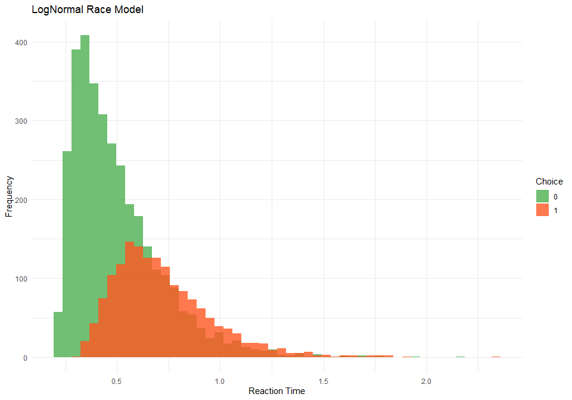
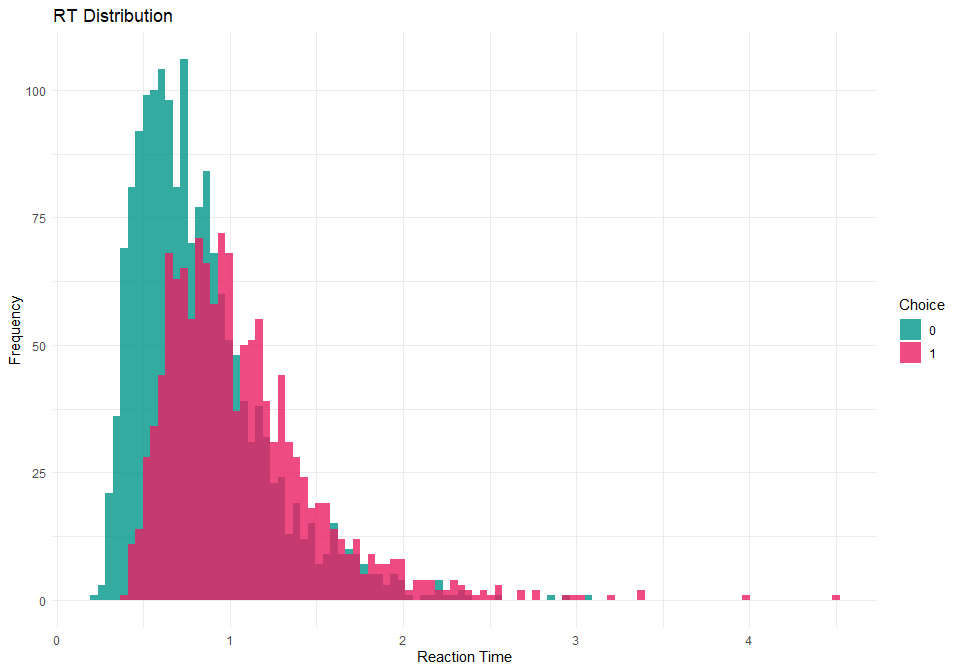

Cognitive Models for Subjective Scales and Decision Making Tasks in R
Status
This package is very much totally exploratory - currently made for my own needs. It’s not meant to be stable and robust at this stage. Use at your own risks.
- If you have suggestions for improvement, please get in touch!
- I’ve been seeking the best way to implement various sequential models for a long time, initially trying and failing in R, then developing a lot of hopes for a Julia solution - but that’s not there yet, so I’m back at making some new attempts in R.
- If you are interested in Sequential Sampling Models, see this amazing Julia package
- See also this attempt at creating tutorials
Installation
if (!requireNamespace("remotes", quietly = TRUE)) install.packages("remotes")
remotes::install_github("DominiqueMakowski/cogmod")Available Distributions
CHOCO Model
The Choice-Confidence (CHOCO) model is useful to model data from subjective ratings, such as Likert-type or analog scales, in which the left and the right side correspond to different processes or higher order categorical responses (e.g., “disagree” vs. “agree”, “true” vs. “false”). They can be used to jointly model choice (left or right) and confidence (the degree of left or right).
Code
library(ggplot2)
library(patchwork)
library(cogmod)
# Simulate data using rchoco() with two parameter sets
df1 <- rchoco(n = 5000, confright = 0.8, confleft = 0.7, pex = 0.05)
df2 <- rchoco(n = 5000, confright = 0.3, confleft = 0.3, pex = 0.1)
df3 <- rchoco(n = 5000, confright = 0.3, confleft = 0.3, pex = 0.1,
precright = 1.5, precleft = 1.5, pmid = 0.01)
# Combine data into a single data frame
df <- data.frame(
value = c(df1, df2, df3),
group = rep(c(
"confright = 0.5, confleft = 0.4, pex = 0.2",
"confright = 0.7, confleft = 0.6, pex = 0.1",
"confright = 0.3, confleft = 0.3, pex = 0.1"
), each = 5000)
)
# Create the histogram
ggplot(df, aes(x = value, fill = group)) +
geom_histogram(alpha = 0.8, position = "identity", bins = 70) +
labs(title = "CHOCO Distribution", x = "Value", y = "", fill = "Parameters") +
theme_minimal() +
scale_fill_manual(values = c("#E91E63", "#9C27B0", "#FF9800"))
LNR Model
The Log-Normal Race (LNR) model is useful for modeling reaction times and errors in decision-making tasks. The model assumes that each accumulator draws a value from a LogNormal distribution (shifted by a non-decision time τ). The winning accumulator (minimum draw) determines the observed reaction time and choice.
Code
# Simulate data using rlnr()
lnr_data <- rlnr(n = 5000, nuzero = 1, nuone = 0.5, sigmazero = 1, sigmaone = 0.5, ndt = 0.2)
# Create histograms for each choice
ggplot(lnr_data, aes(x = rt, fill = factor(response))) +
geom_histogram(alpha = 0.8, position = "identity", bins = 50) +
labs(title = "LogNormal Race Model", x = "Reaction Time", y = "Frequency", fill = "Choice") +
theme_minimal() +
scale_fill_manual(values = c("#4CAF50", "#FF5722"))
Usage with brms
Subjective Ratings
Simulate Data
options(mc.cores = parallel::detectCores() - 2)
library(easystats)
library(brms)
library(cmdstanr)
df <- data.frame()
for(x in seq(0.1, 0.9, by = 0.1)) {
df <- data.frame(x = x,
score = rchoco(n = 100, p = 0.4 + x / 2, confright = 0.4 + x / 3,
confleft = 1-x, pex = 0.03, bex = 0.6, pmid = 0)) |>
rbind(df)
}
df |>
ggplot(aes(x = score, y = after_stat(density))) +
geom_histogram(bins = 100, fill = "#2196F3") +
labs(title = "Rating Distribution", x = "Score", y = "Density") +
theme_minimal()
ZOIB Model
The Zero-One Inflated Beta (ZOIB) model assumes that the data can be modeled as a mixture of two logistic regression processes for the boundary values (0 and 1) and a beta regression process for the continuous proportions in-between.
f <- bf(
score ~ x,
phi ~ x,
zoi ~ x,
coi ~ x,
family = zero_one_inflated_beta()
)
m_zoib <- brm(f,
data = df, family = zero_one_inflated_beta(), init = 0,
chains = 4, iter = 500, backend = "cmdstanr"
)
m_zoib <- brms::add_criterion(m_zoib, "loo") # For later model comparison
saveRDS(m_zoib, file = "man/figures/m_zoib.rds")XBX Model
Kosmidis & Zeileis (2024) introduce a generalization of the classic beta regression model with extended support [0, 1]. Specifically, the extended-support beta distribution (xbeta) leverages an underlying symmetric four-parameter beta distribution with exceedence parameter nu to obtain support [-nu, 1 + nu] that is subsequently censored to [0, 1] in order to obtain point masses at the boundary values 0 and 1.
f <- bf(
score ~ x,
phi ~ x,
kappa ~ x,
family = xbeta()
)
m_xbx <- brm(f,
data = df, family = xbeta(), init = 0,
chains = 4, iter = 500, backend = "cmdstanr"
)
m_xbx <- brms::add_criterion(m_xbx, "loo") # For later model comparison
saveRDS(m_xbx, file = "man/figures/m_xbx.rds")Beta-Gate Model
The Beta-Gate model corresponds to a reparametrized Ordered Beta model (Kubinec, 2023). In this model, observed 0s and 1s represent instances where the underlying continuous response tendency fell beyond lower or upper boundary points (‘gates’).
f <- bf(
score ~ x,
phi ~ x,
pex ~ x,
bex ~ x,
family = betagate()
)
m_betagate <- brm(f,
data = df, family = betagate(), stanvars = betagate_stanvars(), init = 0,
chains = 4, iter = 500, backend = "cmdstanr"
)
m_betagate <- brms::add_criterion(m_betagate, "loo") # For later model comparison
saveRDS(m_betagate, file = "man/figures/m_betagate.rds")CHOCO Model
See the documentation of the Choice-Confidence (CHOCO).
f <- bf(
score ~ x,
confright ~ x,
confleft ~ x,
precright ~ x,
precleft ~ x,
pex ~ x,
bex ~ x,
pmid = 0,
family = choco()
)
m_choco <- brm(f,
data = df, family = choco(), stanvars = choco_stanvars(), init = 0,
chains = 4, iter = 500, backend = "cmdstanr"
)
m_choco <- brms::add_criterion(m_choco, "loo") # For later model comparison
saveRDS(m_choco, file = "man/figures/m_choco.rds")Model Comparison
We can compare these models together using the loo package, which shows that CHOCO provides a significantly better fit than the other models.
Code
m_zoib <- readRDS("man/figures/m_zoib.rds")
m_xbx <- readRDS("man/figures/m_xbx.rds")
m_betagate <- readRDS("man/figures/m_betagate.rds")
m_choco <- readRDS("man/figures/m_choco.rds")
loo::loo_compare(m_zoib, m_xbx, m_betagate, m_choco) |>
parameters(include_ENP = TRUE)# Fixed Effects
Name | LOOIC | ENP | ELPD | Difference | Difference_SE | p
--------------------------------------------------------------------------
m_choco | -770.65 | 8.93 | 385.33 | 0.00 | 0.00 |
m_betagate | -159.76 | 7.21 | 79.88 | -305.45 | 16.68 | < .001
m_zoib | -159.73 | 7.00 | 79.86 | -305.46 | 16.99 | < .001
m_xbx | -145.03 | 5.11 | 72.51 | -312.81 | 16.81 | < .001Running posterior predictive checks allows to visualize the predicted distributions from various models. We can see how typical Beta-related models fail to capture the bimodal nature of the data, which is well captured by the CHOCO model.
Code
pred <- rbind(
estimate_prediction(m_zoib, keep_iterations = 200) |>
reshape_iterations() |>
data_modify(Model = "ZOIB"),
estimate_prediction(m_xbx, keep_iterations = 200) |>
reshape_iterations() |>
data_modify(Model = "XBX"),
estimate_prediction(m_betagate, keep_iterations = 200) |>
reshape_iterations() |>
data_modify(Model = "Beta-Gate"),
estimate_prediction(m_choco, keep_iterations = 200) |>
reshape_iterations() |>
data_modify(Model = "CHOCO")
)
insight::get_data(m_zoib) |>
ggplot(aes(x = score, y = after_stat(density))) +
geom_histogram(bins = 100, fill = "#2196F3") +
labs(title = "Rating Distribution", x = "Score", y = "Density") +
theme_minimal() +
geom_histogram(
data = pred, aes(x = iter_value, group = as.factor(iter_group)),
bins = 100, alpha = 0.02, position = "identity", fill = "#FF5722"
) +
facet_wrap(~Model)
Effect Visualisation
We can see how the predicted distribution changes as a function of x and gets “pushed” to the right. Moreover, we can also visualize the effect of x on specific parameters, showing that it mostly affects the parameter conf (the mean confidence - i.e., central tendency - on the right side), confleft (the relative confidence of the left side), and mu, which corresponds to the p probability of answering on the right. This is consistent with our expectations, and reflects the larger and more concentrated mass on the right of the scale for higher value of x (in brown).
Code
p1 <- modelbased::estimate_prediction(m_choco, data = "grid", length = 4, keep_iterations = 500) |>
reshape_iterations() |>
ggplot(aes(x = iter_value, fill = as.factor(x))) +
geom_histogram(alpha = 0.6, bins = 100, position = "identity") +
scale_fill_bluebrown_d() +
theme_minimal()
# Predict various parameters
pred_params <- data.frame()
for(param in c("expectation", "confright", "confleft", "precright", "precleft", "pex")) {
pred_params <- m_choco |>
modelbased::estimate_prediction(data = "grid", length = 20, predict = param) |>
as.data.frame() |>
dplyr::mutate(Parameter = param) |> # TODO: replace by data_modify after PR
rbind(pred_params)
}
p2 <- pred_params |>
ggplot(aes(x = x, y = Predicted)) +
geom_ribbon(aes(ymin = CI_low, ymax = CI_high, fill = Parameter), alpha = 0.2) +
geom_line(aes(color = Parameter), linewidth = 1) +
facet_wrap(~Parameter, scales = "free_y", ncol=3) +
scale_fill_viridis_d() +
scale_color_viridis_d() +
theme_minimal()
p1 / p2Cognitive Tasks
Simulate Data
df <- rlnr(n = 3000, nuzero = 0.2, nuone = 0, sigmazero = 0.8, sigmaone = 0.5, ndt = 0.2) |>
datawizard::data_filter(rt < 5)
df |>
ggplot(aes(x = rt, fill = factor(response))) +
geom_histogram(alpha = 0.8, position = "identity", bins = 100) +
labs(title = "RT Distribution", x = "Reaction Time", y = "Frequency", fill = "Choice") +
theme_minimal() +
scale_fill_manual(values = c("#009688", "#E91E63"))
dfcorrect <- df[df$response == 0,]RT-only Models
We are going to start with models that only predict the reaction time, and ignore the choice. Note that we only use the data from the correct trials (i.e., the ones with response == 0).
Normal
Code
f <- bf(
rt ~ 1
)
m_normal <- brm(f,
data = dfcorrect,
init = 0,
chains = 4, iter = 500, backend = "cmdstanr"
)
m_normal <- brms::add_criterion(m_normal, "loo")
saveRDS(m_normal, file = "man/figures/m_normal.rds")ExGaussian
Code
f <- bf(
rt ~ 1,
sigma ~ 1,
beta ~ 1,
family = exgaussian()
)
m_exgauss <- brm(f,
data = dfcorrect,
family = exgaussian(),
init = 0,
chains = 4, iter = 500, backend = "cmdstanr"
)
m_exgauss <- brms::add_criterion(m_exgauss, "loo")
saveRDS(m_exgauss, file = "man/figures/m_exgauss.rds")Shifted LogNormal
Code
f <- bf(
rt ~ 1,
sigma ~ 1,
tau ~ 1,
minrt = min(dfcorrect$rt),
family = rt_lognormal()
)
priors <- brms::set_prior("normal(0, 1)", class = "Intercept", dpar = "tau") |>
brms::validate_prior(f, data = dfcorrect)
m_lognormal <- brm(
f,
prior = priors,
data = dfcorrect,
stanvars = rt_lognormal_stanvars(),
init = 0,
chains = 4, iter = 500, backend = "cmdstanr"
)
m_lognormal <- brms::add_criterion(m_lognormal, "loo")
saveRDS(m_lognormal, file = "man/figures/m_lognormal.rds")Inverse Gaussian (Shifted Wald)
Code
f <- bf(
rt ~ 1,
bs ~ 1,
tau ~ 1,
minrt = min(df$rt),
family = rt_invgaussian()
)
priors <- brms::set_prior("normal(0, 1)", class = "Intercept", dpar = "tau") |>
brms::validate_prior(f, data = dfcorrect)
m_wald <- brm(
f,
prior = priors,
data = dfcorrect,
stanvars = rt_invgaussian_stanvars(),
init = 0,
chains = 4, iter = 500, backend = "cmdstanr"
)
m_wald <- brms::add_criterion(m_wald, "loo")
saveRDS(m_wald, file = "man/figures/m_wald.rds")Weibull
Code
f <- bf(
rt ~ 1,
sigma ~ 1,
tau ~ 1,
minrt = min(df$rt),
family = rt_weibull()
)
priors <- brms::set_prior("normal(0, 1)", class = "Intercept", dpar = "tau") |>
brms::validate_prior(f, data = dfcorrect)
m_weibull <- brm(
f,
prior = priors,
data = dfcorrect,
stanvars = rt_weibull_stanvars(),
init = 0,
chains = 4, iter = 500, backend = "cmdstanr"
)
m_weibull <- brms::add_criterion(m_weibull, "loo")
saveRDS(m_weibull, file = "man/figures/m_weibull.rds")LogWeibull (Shifted Gumbel)
Code
f <- bf(
rt ~ 1,
sigma ~ 1,
tau ~ 1,
minrt = min(df$rt),
family = rt_logweibull()
)
priors <- brms::set_prior("normal(0, 1)", class = "Intercept", dpar = "tau") |>
brms::validate_prior(f, data = dfcorrect)
m_logweibull <- brm(
f,
prior = priors,
data = dfcorrect,
stanvars = rt_logweibull_stanvars(),
init = 0,
chains = 4, iter = 500, backend = "cmdstanr"
)
m_logweibull <- brms::add_criterion(m_logweibull, "loo")
saveRDS(m_logweibull, file = "man/figures/m_logweibull.rds")Inverse Weibull (Shifted Fréchet)
Code
f <- bf(
rt ~ 1,
sigma ~ 1,
tau ~ 1,
minrt = min(df$rt),
family = rt_invweibull()
)
priors <- brms::set_prior("normal(0, 1)", class = "Intercept", dpar = "tau") |>
brms::validate_prior(f, data = dfcorrect)
m_invweibull <- brm(
f,
prior = priors,
data = dfcorrect,
stanvars = rt_invweibull_stanvars(),
init = 0,
chains = 4, iter = 500, backend = "cmdstanr"
)
m_invweibull <- brms::add_criterion(m_invweibull, "loo")
saveRDS(m_invweibull, file = "man/figures/m_invweibull.rds")Gamma
Code
f <- bf(
rt ~ 1,
sigma ~ 1,
tau ~ 1,
minrt = min(df$rt),
family = rt_gamma()
)
priors <- brms::set_prior("normal(0, 1)", class = "Intercept", dpar = "tau") |>
brms::validate_prior(f, data = dfcorrect)
m_gamma <- brm(
f,
prior = priors,
data = dfcorrect,
stanvars = rt_gamma_stanvars(),
init = 0,
chains = 4, iter = 500, backend = "cmdstanr"
)
m_gamma <- brms::add_criterion(m_gamma, "loo")
saveRDS(m_gamma, file = "man/figures/m_gamma.rds")Inverse Gamma
Code
f <- bf(
rt ~ 1,
sigma ~ 1,
tau ~ 1,
minrt = min(df$rt),
family = rt_invgamma()
)
priors <- brms::set_prior("normal(0, 1)", class = "Intercept", dpar = "tau") |>
brms::validate_prior(f, data = dfcorrect)
m_invgamma <- brm(
f,
prior = priors,
data = dfcorrect,
stanvars = rt_invgamma_stanvars(),
init = 0,
chains = 4, iter = 500, backend = "cmdstanr"
)
m_invgamma <- brms::add_criterion(m_invgamma, "loo")
saveRDS(m_invgamma, file = "man/figures/m_invgamma.rds")Model Comparison
We can compare these models together using the loo package, which shows that CHOCO provides a significantly better fit than the other models.
Code
m_normal <- readRDS("man/figures/m_normal.rds")
m_exgauss <- readRDS("man/figures/m_exgauss.rds")
m_lognormal <- readRDS("man/figures/m_lognormal.rds")
m_wald <- readRDS("man/figures/m_wald.rds")
m_weibull <- readRDS("man/figures/m_wald.rds")
m_logweibull <- readRDS("man/figures/m_logweibull.rds")
m_invweibull <- readRDS("man/figures/m_invweibull.rds")
m_gamma <- readRDS("man/figures/m_gamma.rds")
m_invgamma <- readRDS("man/figures/m_invgamma.rds")
loo::loo_compare(m_normal, m_exgauss, m_lognormal, m_wald,
m_weibull, m_logweibull, m_invweibull,
m_gamma, m_invgamma) |>
parameters(include_ENP = TRUE)# Fixed Effects
Name | LOOIC | ENP | ELPD | Difference | Difference_SE | p
------------------------------------------------------------------------------
m_wald | 941.45 | 2.83 | -470.73 | 0.00 | 0.00 |
m_weibull | 941.45 | 2.83 | -470.73 | 0.00 | 0.00 |
m_lognormal | 942.34 | 2.92 | -471.17 | -0.44 | 1.27 | 0.726
m_invgamma | 957.25 | 2.17 | -478.63 | -7.90 | 3.94 | 0.045
m_gamma | 957.27 | 2.83 | -478.64 | -7.91 | 4.11 | 0.054
m_exgauss | 960.26 | 2.74 | -480.13 | -9.41 | 4.08 | 0.021
m_invweibull | 1100.95 | 2.39 | -550.47 | -79.75 | 11.04 | < .001
m_normal | 1578.76 | 4.16 | -789.38 | -318.65 | 31.17 | < .001
m_logweibull | 2628.31 | 1.02 | -1314.15 | -843.43 | 25.27 | < .001Code
# `iterations` controls the actual number of iterations used (e.g., for the point-estimate)
# and `keep_iterations` the number included.
pred <- rbind(
estimate_prediction(m_normal, keep_iterations = 100, iterations = 100) |>
reshape_iterations() |>
data_modify(Model = "Normal"),
estimate_prediction(m_exgauss, keep_iterations = 100, iterations = 100) |>
reshape_iterations() |>
data_modify(Model = "ExGaussian"),
estimate_prediction(m_lognormal, keep_iterations = 100, iterations = 100) |>
reshape_iterations() |>
data_modify(Model = "LogNormal"),
estimate_prediction(m_wald, keep_iterations = 100, iterations = 100) |>
reshape_iterations() |>
data_modify(Model = "InvGaussian"),
estimate_prediction(m_weibull, keep_iterations = 100, iterations = 100) |>
reshape_iterations() |>
data_modify(Model = "Weibull"),
# Fréchet and Gumbel have a very heavy right tail, and can produce very large values
# Hence we need to truncate the draws
estimate_prediction(m_logweibull, keep_iterations = 100, iterations = 100) |>
reshape_iterations() |>
data_modify(Model = "LogWeibull") |>
data_filter(iter_value < 5),
estimate_prediction(m_invweibull, keep_iterations = 100, iterations = 100) |>
reshape_iterations() |>
data_modify(Model = "InvWeibull") |>
data_filter(iter_value < 5),
estimate_prediction(m_gamma, keep_iterations = 100, iterations = 100) |>
reshape_iterations() |>
data_modify(Model = "Gamma"),
estimate_prediction(m_invgamma, keep_iterations = 100, iterations = 100) |>
reshape_iterations() |>
data_modify(Model = "InvGamma")
)
pred |>
ggplot(aes(x=iter_value)) +
geom_histogram(data = df[df$response == 0,], aes(x=rt, y = after_stat(density)),
fill = "black", bins=100) +
geom_line(aes(color=Model, group=iter_group), stat="density", alpha=0.3) +
theme_minimal() +
facet_wrap(~Model) +
coord_cartesian(xlim = c(0, 5)) +
see::scale_color_material_d(guide = "none")Decision Making (Choice + RT)
Drift Diffusion Model (DDM)
f <- bf(
rt | dec(response) ~ 1,
bs ~ 1,
bias ~ 1,
tau ~ 1,
minrt = min(df$rt),
family = ddm()
)
m_ddm <- brm(f,
data = df,
init = 0,
family = ddm(),
stanvars = ddm_stanvars(),
chains = 4, iter = 500, backend = "cmdstanr"
)
m_ddm <- brms::add_criterion(m_ddm, "loo")
saveRDS(m_ddm, file = "man/figures/m_ddm.rds")Linear Ballistic Accumulator (LBA)
f <- bf(
rt | dec(response) ~ 1,
vdelta ~ 1,
sigmazero ~ 1,
sigmadelta ~ 1,
A ~ 1,
k ~ 1,
tau ~ 1,
minrt = min(df$rt),
family = lba()
)
priors <- c(
brms::set_prior("normal(0, 1)", class = "Intercept", dpar = "tau"),
brms::set_prior("normal(0, 1)", class = "Intercept", dpar = "A"),
brms::set_prior("normal(0, 1)", class = "Intercept", dpar = "k"),
brms::set_prior("normal(0, 1)", class = "Intercept", dpar = ""),
brms::set_prior("normal(0, 1)", class = "Intercept", dpar = "vdelta"),
brms::set_prior("normal(0, 1)", class = "Intercept", dpar = "sigmazero")
) |>
brms::validate_prior(f, data = df)
m_lba <- brm(f,
data = df,
init = 1,
prior = priors,
family = lba(),
stanvars = lba_stanvars(),
chains = 4, iter = 500, backend = "cmdstanr"
)
m_lba <- brms::add_criterion(m_lba, "loo")
saveRDS(m_lba, file = "man/figures/m_lba.rds")LogNormal Race (LNR)
f <- bf(
rt | dec(response) ~ 1,
nuone ~ 1,
sigmazero ~ 1,
sigmaone ~ 1,
tau ~ 1,
minrt = min(df$rt),
family = lnr()
)
m_lnr <- brm(f,
data = df,
init = 0,
family = lnr(),
stanvars = lnr_stanvars(),
chains = 4, iter = 500, backend = "cmdstanr"
)
m_lnr <- brms::add_criterion(m_lnr, "loo")
saveRDS(m_lnr, file = "man/figures/m_lnr.rds")Model Comparison
m_ddm <- readRDS("man/figures/m_ddm.rds")
m_lnr <- readRDS("man/figures/m_lnr.rds")
loo::loo_compare(m_ddm, m_lnr) |>
parameters::parameters()# Fixed Effects
Name | LOOIC | ELPD | Difference | Difference_SE | p
----------------------------------------------------------------
m_lnr | 6048.62 | -3024.31 | 0.00 | 0.00 |
m_ddm | 6805.52 | -3402.76 | -378.45 | 33.57 | < .001Code
pred <- estimate_prediction(m_lnr, data = df, iterations = 100, keep_iterations = TRUE) |>
as.data.frame() |>
reshape_iterations() |>
datawizard::data_select(select = c("Row", "Component", "iter_value", "iter_group", "iter_index")) |>
datawizard::data_to_wide(id_cols=c("Row", "iter_group"), values_from="iter_value", names_from="Component")
pred <- datawizard::data_filter(pred, "rt < 4")
.density_rt_response <- function(rt, response, length.out = 100) {
rt_choice0 <- rt[response == 0]
rt_choice1 <- rt[response == 1]
xaxis <- seq(0, max(rt_choice0, rt_choice1)* 1.1, length.out = length.out)
insight::check_if_installed("logspline")
rbind(
data.frame(x = xaxis,
y = logspline::dlogspline(xaxis, logspline::logspline(rt_choice0)),
response = 0),
data.frame(x = xaxis,
y = -logspline::dlogspline(xaxis, logspline::logspline(rt_choice1)),
response = 1)
)
}
density_rt_response <- function(data, rt="rt", response="response", by=NULL, length.out = 100) {
if (is.null(by)) {
out <- .density_rt_response(data[[rt]], data[[response]], length.out = length.out)
} else {
out <- sapply(split(data, data[[by]]), function(x) {
d <- .density_rt_response(x[[rt]], x[[response]], length.out = length.out)
d[[by]] <- x[[by]][1]
d
}, simplify = FALSE)
out <- do.call(rbind, out)
out[[by]] <- as.factor(out[[by]])
}
out[[response]] <- as.factor(out[[response]])
row.names(out) <- NULL
out
}
dat <- density_rt_response(pred, rt="rt", response="response", by="iter_group")
df |>
ggplot(aes(x=rt)) +
geom_histogram(data=df[df$response == 0,], aes(y=after_stat(density)), fill="darkgreen", bins=100) +
geom_histogram(data=df[df$response == 1,], aes(y=after_stat(-density)), fill="darkred", bins=100) +
geom_line(data=dat, aes(x=x, y=y, color = response, group = interaction(response, iter_group)), alpha=0.1) +
scale_color_manual(values = c("green", "red")) +
theme_minimal()